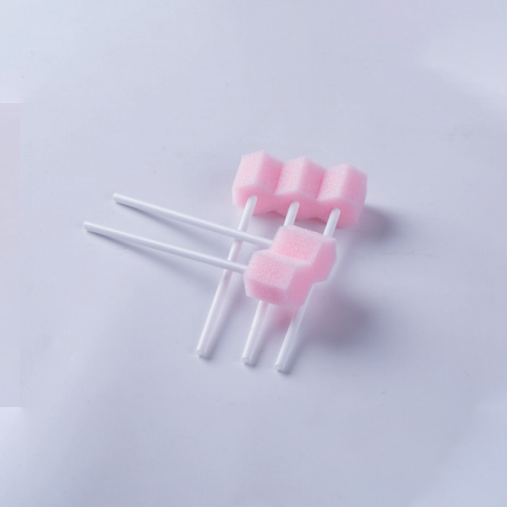

Suction catheters are among the most critical single-use devices in modern healthcare. Whether clearing secretions from an intubated patient's airway, evacuating blood and irrigation fluid during surgery, or draining wound exudate, the suction catheter performs a function that cannot be deferred and cannot be compromised. Yet procurement decisions for these devices often come down to price alone — overlooking the clinical, ergonomic, and infection control factors that directly affect patient outcomes and staff efficiency.
This guide provides a comprehensive overview of disposable suction catheter types, specifications, and selection criteria. It is designed for procurement managers, infection control officers, and clinical supply coordinators who need to make informed purchasing decisions across ICU, operating theatre, emergency department, and general ward use cases.
Open vs. Closed Suction Systems
The most fundamental distinction in suction catheter design is between open and closed systems. The choice between them affects infection risk, ventilator circuit integrity, and procedure efficiency.
Open Suction Catheters
Open suction catheters are single-use, sterile catheters that connect to a suction source via a Yankauer-style handle or a standard connector. They are used by disconnecting the patient from the ventilator circuit (or accessing the airway via a tracheostomy stoma), inserting the catheter, applying suction, and withdrawing it. After a single use, the catheter is discarded.
- Cost. Open catheters are the lowest-cost option per unit, typically priced at a fraction of closed-system equivalents.
- Versatility. Available in a wide range of sizes, tip configurations (straight, coude, whistle-tip), and lengths. Suitable for oral suctioning, nasopharyngeal suctioning, tracheal suctioning, and wound drainage.
- Limitation. Each use requires breaking the ventilator circuit, which increases the risk of ventilator-associated pneumonia (VAP) and causes transient hypoxia during disconnection. For intubated ICU patients, repeated open suctioning is now widely regarded as suboptimal practice.
Closed Suction Systems (In-Line Catheters)
Closed suction systems are integrated into the ventilator circuit. The catheter is housed within a protective sleeve and can be advanced into the patient's airway without disconnecting the ventilator. After suctioning, the catheter is retracted back into the sleeve — maintaining a closed system throughout the procedure.
- Infection control. By eliminating circuit disconnection, closed systems significantly reduce the risk of VAP and cross-contamination. This is particularly important in ICU settings where intubated patients may require suctioning every one to four hours.
- Staff efficiency. The procedure is faster — typically two hands instead of three (no need for a second practitioner to maintain PEEP or manually ventilate during disconnection). This is a meaningful advantage in understaffed or high-acuity environments.
- Cost. Closed systems are more expensive per unit than open catheters. However, when the cost of a single VAP episode (extended ICU stay, antibiotics, additional diagnostics) is factored in, the total cost of ownership often favours closed systems for intubated patients.
| Feature | Open Suction Catheter | Closed Suction System |
|---|---|---|
| Circuit disconnection | Required ✗ | Not required ✓ |
| VAP risk | Higher | Significantly reduced |
| Per-unit cost | Low | Moderate to high |
| Primary use | General ward, OR, emergency, tracheostomy | Intubated ICU patients |
| Staff required | Often two (one to ventilate) | One |
| Replacement interval | Single use, discard after each procedure | Every 24–72 hours (per facility protocol) |
Catheter Sizing: French (Fr) Scale Explained
Suction catheter diameter is measured in French (Fr), where 1 Fr = 0.33 mm. Selecting the correct size is critical — too large a catheter can cause mucosal trauma and hypoxia by occluding the airway; too small a catheter will be ineffective at clearing thick secretions.
| Patient Population | Recommended Size (Fr) | Typical Applications |
|---|---|---|
| Neonate | 5–6 Fr | NICU, neonatal intubation, paediatric airway |
| Infant / Toddler | 6–8 Fr | Paediatric ward, paediatric ICU |
| Child (4–12 years) | 8–10 Fr | Paediatric ward, paediatric OR |
| Adolescent / Small Adult | 10–12 Fr | General ward, OR, emergency department |
| Adult (standard) | 12–14 Fr | ICU, OR, general ward, tracheostomy care |
| Adult (thick secretions) | 14–16 Fr | ICU, OR, bronchoscopy-assisted suction |
A practical rule of thumb: the catheter's external diameter should not exceed half the internal diameter of the endotracheal tube or tracheostomy tube. Exceeding this ratio increases airway resistance during suctioning and raises the risk of barotrauma and hypoxia.
Material and Design Features
Catheter Body: PVC vs. Silicone
Most disposable suction catheters are manufactured from medical-grade polyvinyl chloride (PVC) due to its flexibility, transparency, and cost-effectiveness. Silicone catheters are also available and offer distinct advantages:
- PVC. Transparent (allowing visualisation of secretions), flexible, inexpensive. The standard choice for general-purpose suctioning. Medical-grade PVC is biocompatible and meets ISO 10993 requirements for devices contacting mucous membranes.
- Silicone. Softer and more flexible than PVC, with lower friction against mucosal surfaces. Preferred for patients with friable airway mucosa, prolonged suctioning needs, or repeated catheter insertions. Higher per-unit cost, but reduced risk of mucosal injury.
Tip Design: Straight, Coude, and Whistle-Tip
The catheter tip geometry affects ease of insertion and effectiveness of secretion clearance:
- Straight tip with side eyes. The most common configuration. Two lateral eyes (openings) near the tip allow suctioning from multiple angles. Ideal for general-purpose use and tracheal suctioning.
- Coude (angled) tip. A gently curved tip that facilitates navigation around anatomical curves, particularly useful for nasopharyngeal suctioning and in patients with difficult airway anatomy.
- Whistle-tip. A single large opening at the catheter end, shaped like a whistle. Best for thick, viscous secretions and wound drainage. Less commonly used for tracheal suctioning due to higher mucosal trauma risk.
Connector Types
The proximal end of the catheter connects to the suction tubing or ventilator circuit:
- Standard 6 mm / 15 mm connector. Compatible with most suction tubing and Yankauer handles. The universal standard for open suction catheters.
- Multi-port closed system connector. Integrated into the closed suction sleeve. Includes ports for ventilator circuit connection, inline gas sampling, and bronchoscope access. Designed for ICU ventilator compatibility.
- Control vent (thumb port). An open suction catheter feature — a vent near the connector that allows the practitioner to control suction application by covering or releasing the vent with their thumb. Standard on most adult and paediatric open catheters.
Sterilisation and Packaging
All disposable suction catheters are supplied sterile. The two primary sterilisation methods are:
- Ethylene oxide (EO) gas. The most common method for suction catheters. Effective, validated, and compatible with PVC and silicone materials. Requires adequate aeration time to ensure EO residuals are within safe limits (ISO 10993-7).
- Gamma irradiation. An alternative sterilisation method. No chemical residuals, but can affect the mechanical properties of some polymers over time. Less common for suction catheters but used for certain closed-system products.
Packaging formats vary by use case:
| Format | Advantages | Best For |
|---|---|---|
| Individual blister pack | Guaranteed sterility until use; easy to identify size from packaging label; compact storage | ICU, OR, emergency department — any setting where individual catheters are selected by size at point of use |
| Suction kit (catheter + gloves + lubricant + drape) | Complete procedure set in one package; reduces setup time; ensures all required materials are available | General ward, tracheostomy care, pre-hospital emergency care |
| Bulk box (catheters without individual sterile barrier) | Lowest per-unit cost | Non-sterile suctioning applications such as oral suctioning in non-critical settings |
Consumption Benchmarks
Suction catheter consumption varies by department and patient acuity:
- ICU (per intubated bed). 3 to 8 closed suction catheters per day, or 10 to 20 open catheters per day if open suctioning is used. Intubated patients typically require suctioning every 1–4 hours depending on secretion load.
- Operating theatre (per procedure). 2 to 6 open catheters per procedure, depending on procedure type and expected fluid volume. Cardiac and neurosurgical procedures may require more due to continuous irrigation and suction needs.
- Emergency department. 5 to 15 open catheters per shift, depending on patient volume and acuity. Yankauer suction tips are also consumed at a high rate in this setting.
- General ward. 2 to 5 open catheters per shift, primarily for oral suctioning, nebuliser-assisted expectoration support, and tracheostomy care.
Procurement best practices:
- Stock multiple sizes. Ensure at least three sizes (e.g., 10, 12, and 14 Fr for adult use) are available at all times. A single catheter size is insufficient for the range of patient anatomies and secretion viscosities encountered in clinical practice.
- Par level. Maintain 4 to 6 weeks of stock for high-consumption sizes. Suction catheters are compact and lightweight — storage space is rarely a constraint.
- Consolidate with related consumables. Suction catheters can be ordered alongside suction tubing, Yankauer tips, suction canisters, and connection tubing to reduce per-unit shipping costs and simplify purchase order management.
"We standardised on a single supplier for our open suction catheters across all three of our hospital sites. Having consistent sizes, packaging, and connector types means our staff don't need to relearn workflows when they rotate between departments. The consistency has been as valuable as the product quality." — Clinical Supply Manager, Multi-Site Hospital Group
Quality and Regulatory Considerations
When sourcing disposable suction catheters, verify the following:
- ISO 13485 certification. The manufacturer should hold ISO 13485 certification for medical device quality management, covering design, production, and sterilisation processes.
- CE marking / FDA registration. Suction catheters are Class I or Class IIa medical devices depending on the jurisdiction and intended use. Confirm regulatory clearance for your target market.
- Biocompatibility. Catheters contacting mucous membranes should meet ISO 10993 requirements for cytotoxicity, sensitisation, and irritation. Request test documentation with your order.
- Sterility assurance level (SAL). The sterilisation process should achieve a sterility assurance level of 10⁻⁶ (one in a million probability of a non-sterile unit), as required for invasive medical devices.
- Batch traceability. Each production batch should be traceable through lot numbers on the packaging, enabling recalls if quality issues are identified.
Newrise Medical's disposable suction catheters are manufactured in ISO 13485 certified facilities in Changzhou, China, with CE marking available and full quality documentation provided with every order. Our product range includes open suction catheters in sizes 5 Fr to 18 Fr, closed suction systems, and custom OEM configurations.
Conclusion
Disposable suction catheters are indispensable across the full spectrum of clinical care — from the NICU to the operating theatre. Selecting the right type, size, and configuration directly affects patient safety, clinical efficiency, and total cost of care. By understanding the distinctions between open and closed systems, matching catheter specifications to patient population, and partnering with a certified manufacturer, healthcare facilities can optimise their suction catheter procurement without compromising quality.
Newrise Medical manufactures disposable suction catheters in medical-grade PVC and silicone, in straight, coude, and whistle-tip configurations, with individual blister packaging and suction kit options available. CE marked, ISO 13485 certified, and OEM customisation supported. Contact us for samples and pricing →